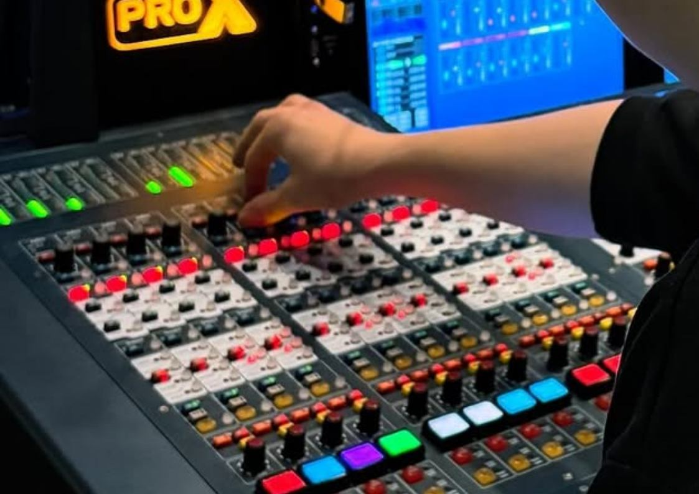
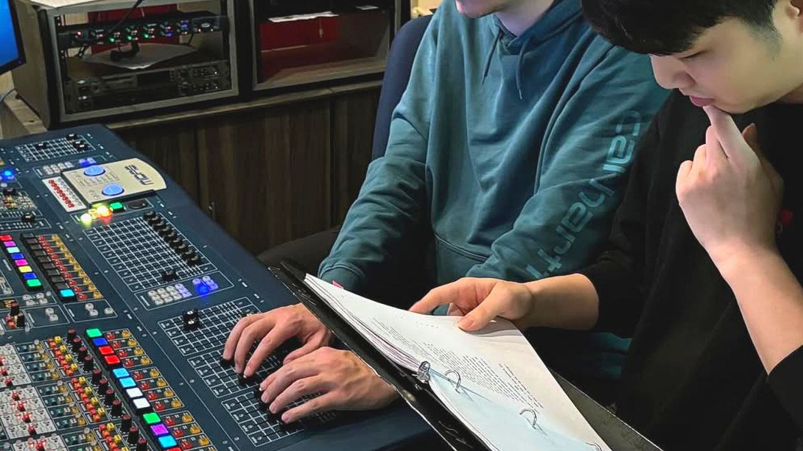
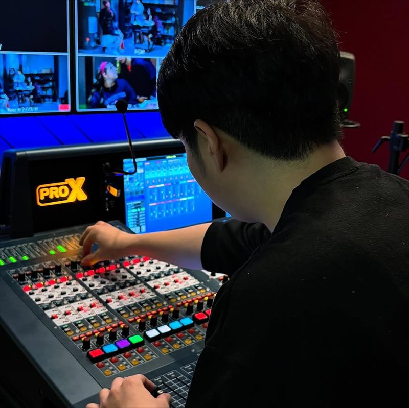
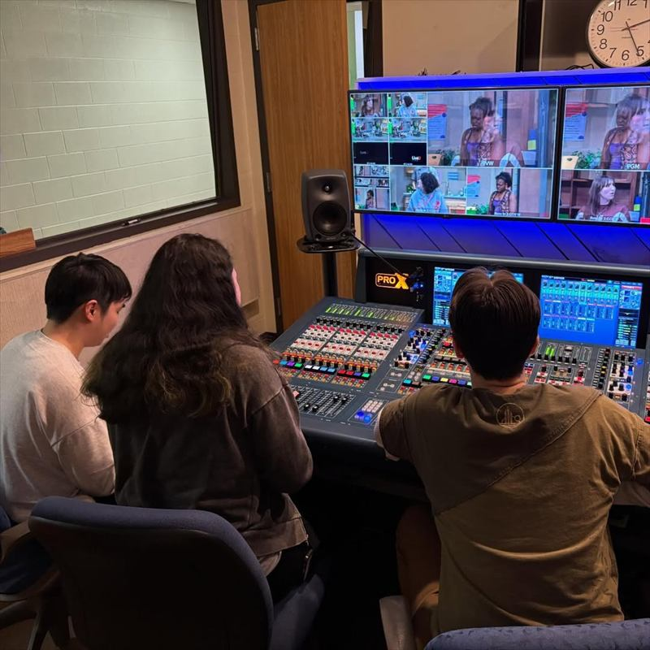
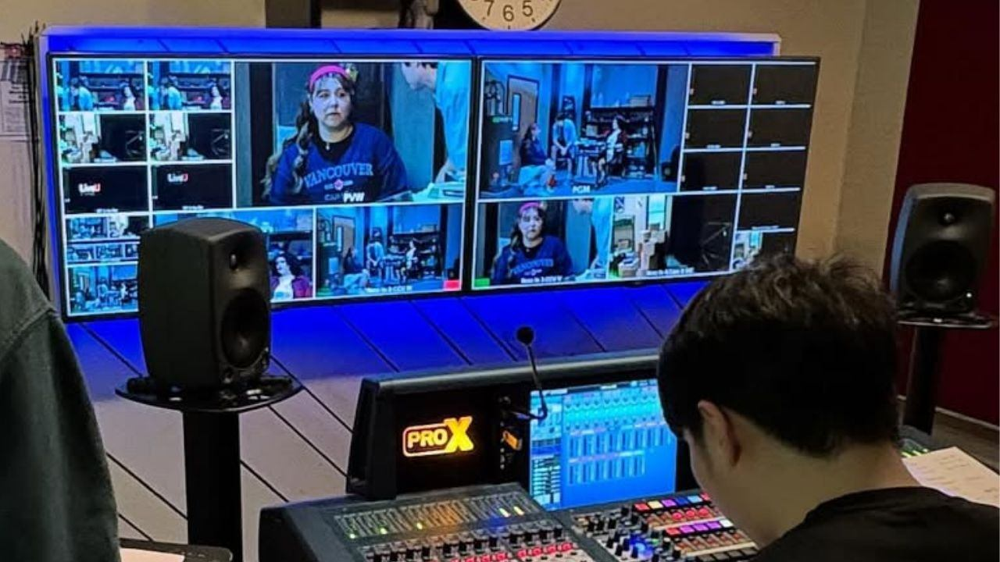
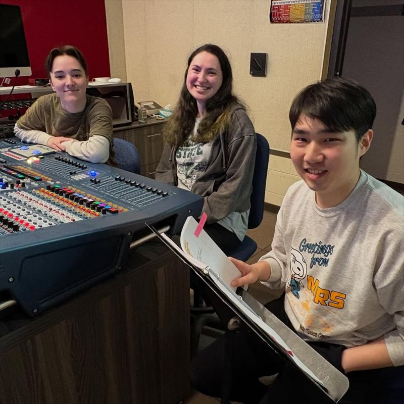

Photo Journalism · Zine
Autumn at MSU
'Autumn at Michigan State University' is a photojournalism zine project capturing the seasonal transition and vibrant fall landscape of the campus.
Download the zine (PDF, 29 MB)Jeff Hwang · Digital Communication Strategist
A curated showcase of strategic planning and multi-media storytelling projects across Audio, Video, Writing, and Strategic Report.
01 · Audio & Sound
Podcasts, audio stories, field recordings and music mixdowns. Tap any card to listen.
02 · Video
Sound design, Foley, film scoring and short-form storytelling. Tap any card to watch.
03 · Writing
Photo Journalism · Zine
'Autumn at Michigan State University' is a photojournalism zine project capturing the seasonal transition and vibrant fall landscape of the campus.
Download the zine (PDF, 29 MB)Film Scenario · Screenplay
A short screenplay about a 13-year-old aspiring magician who overcomes initial failures by training under a reclusive mentor.
Read the screenplay (PDF)04 · Report
Budget & Financial Strategy
A comprehensive production budget and financial strategy report outlining a $122,700 production plan for a 10-track studio album by artist Han Yo Han, covering recording, personnel, visual production, global marketing, and revenue projections.
Read the report (PDF)Album Analysis
An in-depth album analysis report evaluating Sik-K & Lil Moshpit's K-FLIP+, examining its rage-style technical production, legacy sampling framework, track sequencing, visual identity, and industry achievements.
Read the report (PDF)
05 · My Story
Digital Communication Strategist
"Every sound tells a story, and every story finds its rhythm in the right ears."
To me, sound design has never been just about frequencies and volume levels. It is about capturing emotion, shaping narratives, and building an authentic connection with people. Over the past decade, I have explored this connection firsthand, directing and growing a music-driven YouTube channel to over 70,000 subscribers. From conceptualization to production and SEO-driven digital strategy, I learned what makes digital stories resonate in real time.
My time studying Digital Storytelling at Michigan State University transformed this creative passion into rigorous, professional craftsmanship. Leading audio projects as a Capstone Lead Producer, managing live TV broadcast mixing, and serving as an Audio Studio Assistant Intern trained me to excel under pressure, bridge technical precision with creative vision, and mentor fellow creators.
Today, I position myself at the intersection of Auditory Artistry and Digital Communication Strategy. Whether I am fine-tuning a multi-track mix, directing multimedia content, or analyzing audience engagement data, my focus remains constant: crafting stories that not only cut through the digital noise, but truly linger.
See resume




Behind the scenes: sitcom collaboration at WKAR studios with the DS Multicam students and the Department of Theatre.
Scaled a music YouTube channel to 70K+ subscribers through end-to-end audiovisual production.
Optimized long-term retention and SEO performance across a decade of content curation.
Mentored students on studio DAW workflows and advanced recording hardware.
Resolved complex technical software/hardware issues to ensure zero studio downtime.
Mastered audio with analogue outboard gear and provided A&R acoustic consulting for artists.
Executed live sound logistics and acoustic balancing for university concert showcases.
Directed full-cycle narrative audio productions, scripted features, and live TV broadcast mixing.
Executed professional-grade multi-track remixing and billboard album analysis.
Audio & Production
Creative Software
Workflow
10+ years of consistent audience growth and engagement, from zero to 70,000+ subscribers.
Whether you're an artist, brand, or creative team, I bring both technical skill and creative vision to every project.
Professional-grade audio and video production capabilities built through real-world practice and formal training.
From initial concept to final delivery, every detail is managed with care and precision.
Contact
Whether you need audio production, digital content strategy, or a creative partner who understands both the technical and storytelling sides of media, I'm ready to bring your vision to life.